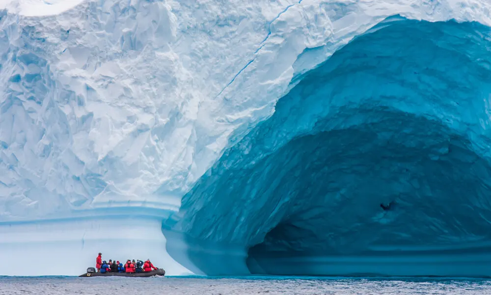

FAVOURITE PLACE

Antarctica is Earth's Southernmost continent and also its coldest, windiest and driest. It contains 90 percent of all of the ice on Earth in an area just under 1.5 times the size of the United States. Yet it has a stunningly diverse landscape of surreal blue glaciers and active volcanoes surrounded by cerulean waters.